OCI - Oracle Cloud Infrastructure
até 30/10 certificação orcle professional free
Cloud
-
Platform
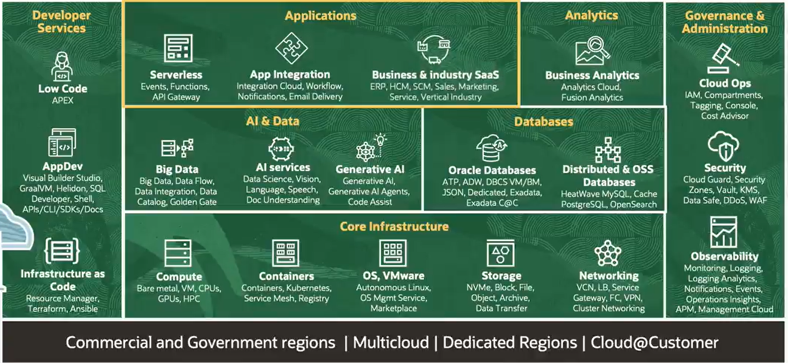
- Cloud regions, MultiCloud, Dedicated Regions, Cloud@Customer
- Developer Services
- Low Code: APEX
- AppDec: Visual Builder Studio, GraaIVM, Helidon, SQL Developer, Shell, APIs/CLI/SDKs/Docs
- Infrastructure as Code: Resouce Manager, Terraform, Ansible
- Governance & Administration
- Cloud Ops: IAM, Compartments, Tagging Console, Cost Advisor
- Security: Cloud Guard, Security Zones, Vault, KMS, Data Safe, DDoS, WAF
- Observability: Minitoring, Logging, Logging Analytics,Notifications, Events, Operations Insights, APM, Management Cloud
- Infrastructure
- Compute: Bare metal, VM, CPUs, GPUs, HPC
- Containers: Docker, Kubernets, Service Mesh, Registry
- OS, VMware: Autonomous Linux, OS Mgmt Service, Marketplace
- Storage: NVMe, Block File, Object, Archive, Data Transfer
- Networking: VCN, LB, Service Gateway, FC, VPN, Cluster Networking
- Databases
- Oracle: ATP, ADW, DBCS VM/BM, JSON, Dedicated Exadata, Exadata C@C
- Distributed & OSS Databases: HeatWave, MySQL, Cache, PostgreSQL, OpenSearch
- Data & AI
- Big Data, Data Flow, Data Integration, Data Catalog, Golden Gate
- AI services: Data Science, Vision Language, Speech, Doc Understanding
- Generative AI: Generative AI, Generative AI Agents, Code Assist
- Analitics
- Business Analytics: Analytics Cloud, Fusion Analytics
- Appications
- Serverless: Events, Functions, API Gateway
- App Integration: Integration Cloud, Workflow, Notifications, Email Delivery
- Business & Industry SaaS: ERP, HCM, SCM, Sales, MArketing, Service, Vertical Industry
- Developer Services
- Cloud regions, MultiCloud, Dedicated Regions, Cloud@Customer
-
Architecture
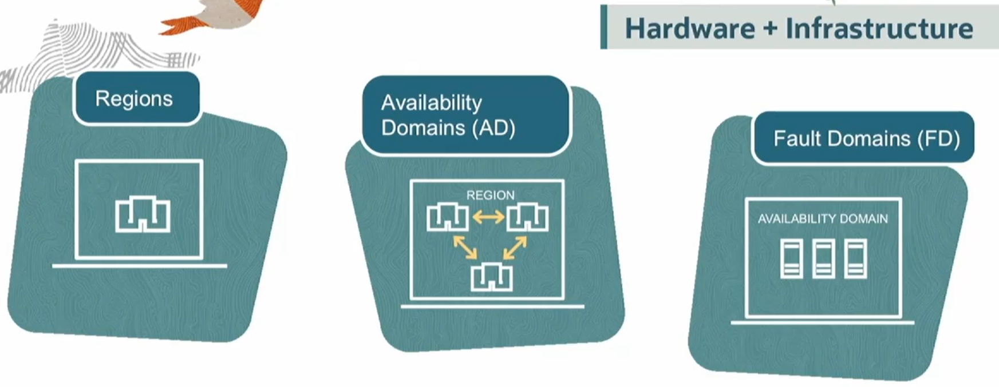
- Topology
- Regions: Localized Geographic Area (Region Pair para desaster recovery)
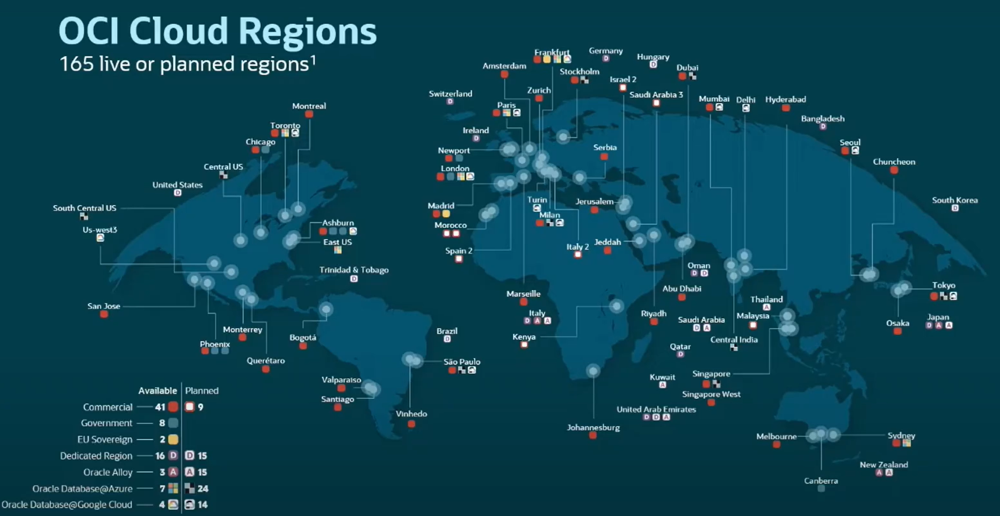
- Availability Domains (AD) [>=1<=3]: Fault tolerant, Within a region, Low latency, High bandwidth (proteção de falhas inteiras)
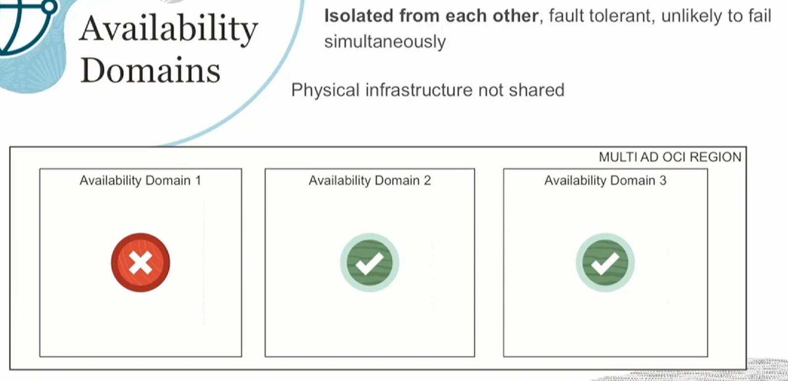
- Fault Domains (FD) [3]: Hardware + infrastructure, Logical datacenters (proteção de um domínio)
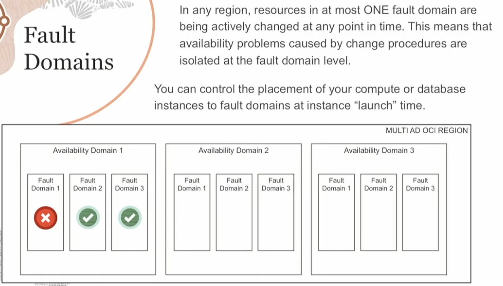
- Fault Domains (FD) [3]: Hardware + infrastructure, Logical datacenters (proteção de um domínio)
- Availability Domains (AD) [>=1<=3]: Fault tolerant, Within a region, Low latency, High bandwidth (proteção de falhas inteiras)
- Regions: Localized Geographic Area (Region Pair para desaster recovery)
- Choosing a Region
- Location: Choose a region closest to your users for lowwst latency and highest perfonce
- Data Residency & Compliance: Many countries have strict data residency requiments
- Service Availability: New cloud service are made available based on regional demand, regulatory compliance, resource availability and other factors
- Topology
-
IAM - Identity and Access Management Service
flowchart LR subgraph Identity Domain Users --> Groups end Groups --> Polices --> Compartments --> Resouces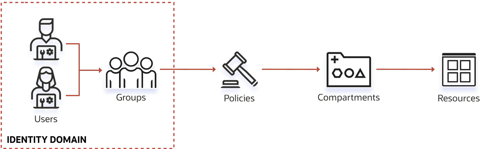
-
Fine-grained Access Control
-
AuthN - Who are you?
-
AuthZ - What permitions do you have?
-
OCI Identity Concepts
OCID=ocid1.<RESOUCE TYPE>.<REALM>.[REGION][.FUTURE USE].<UNIQUE ID>-
Identity Domains
- Users
- Groups
- Dynamic Groups
-
Principals
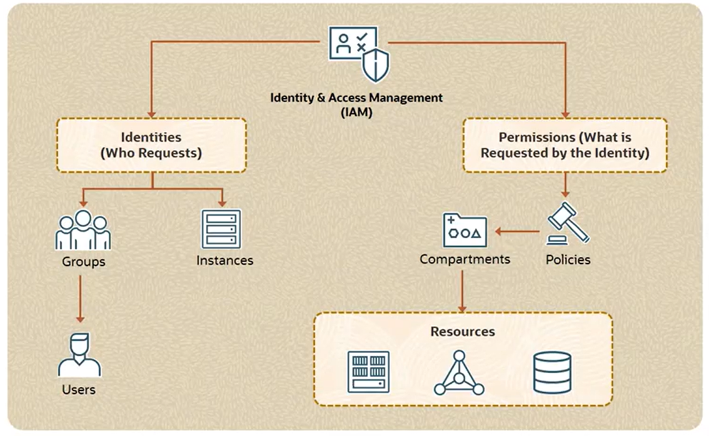
- IAM Users
- AuthN=Autenticação
- User+Pass
- API Signing Key
- Auth Tokens
- AuthZ=Autorização/Permissão
- Polices
- AuthN=Autenticação
- Resource Principals
- Group
- IAM Users
-
Polices
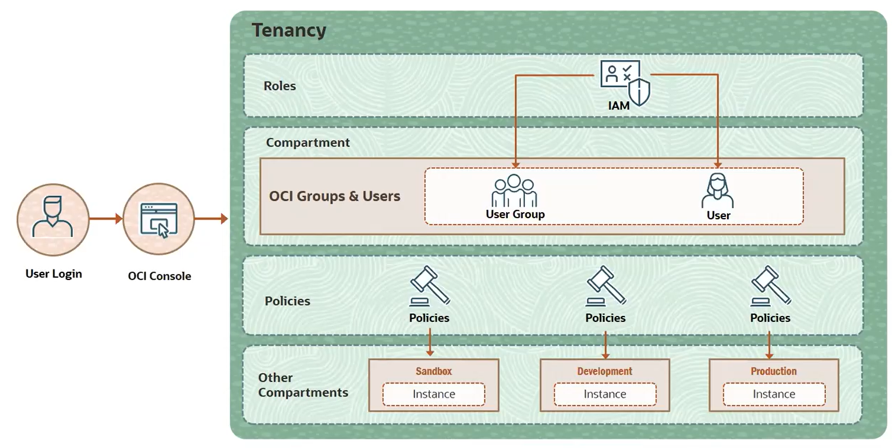
-
Rules
- Allow group
<domain_name>/<group_name>to<verb><resouce-type>in tenancy - Allow group
<domain_name>/<group_name>to<verb><resouce-type>in compartment [where<conditions>] - Allow group
<domain_name>/<group_name>to<verb><resouce-type>in<location>where<conditions>
- Allow group
-
Vebs
Verb Tipo de Acesso (Access Type) Usuário-Alvo Típico (Target User) inspect Capacidade de listar recursos. Permite ver apenas metadados do recurso, mas exclui metadados confidenciais ou especificados pelo usuário. Auditores de Terceiros read Inclui inspect mais a capacidade de obter (get) o recurso em si e metadados especificados pelo usuário. Auditores Internos, Usuários que precisam apenas visualizar detalhes. use Inclui read mais a capacidade de trabalhar com o recurso (as ações variam por tipo de recurso), geralmente permitindo atualizar. Exclui a capacidade de criar ou deletar o recurso. Usuários Finais (Desenvolvedores, Engenheiros) configurando recursos existentes. manage Inclui todos os verbos anteriores e todas as permissões para o recurso, incluindo criar e deletar. Administradores (Admins) -
Aggregate resouce-type
Aggregate resouce-type Descrição Exemplos de Recursos Individuais Incluídos all-resources Cobre todos os recursos em um Compartment ou Tenancy. Qualquer recurso: instance,vcn,volume,bucket, etc.instance-family Cobre todos os recursos relacionados à instância de computação (Compute). instances,instance-images,volume-attachments,console-histories, etc.volume-family Cobre todos os recursos de Block Volume. volumes,volume-attachments,volume-backups,boot-volume-backups, etc.virtual-network-family Cobre todos os recursos de rede em uma Virtual Cloud Network (VCN). vcns,subnets,route-tables,security-lists,internet-gateways, etc.object-family Cobre todos os recursos de Object Storage. buckets,objects,multipart-uploads, etc.database-family Cobre recursos do serviço Database. databases,db-systems,backups, etc.load-balancers Tipos de recurso para o serviço Load Balancer. load-balancers,backend-sets,listeners, etc.cluster-family Cobre recursos relacionados ao Container Engine for Kubernetes (OKE). clusters,cluster-node-pools, etc. -
Aggregate resouce-type
Service Resource Type Descrição Compute instancesInstâncias de Máquina Virtual (VM) ou Bare Metal. ^^ instance-imagesImagens personalizadas usadas para lançar instâncias. ^^ volume-attachmentsConexões de Block Volumes a instâncias. Networking vcnsVirtual Cloud Networks (Redes Virtuais). ^^ subnetsSub-redes dentro de uma VCN. ^^ security-listsListas de regras de segurança de rede. ^^ route-tablesTabelas de roteamento para direcionar o tráfego. ^^ load-balancersLoad Balancers. ^^ network-security-groupsGrupos de Segurança de Rede (NSGs). Storage (Block) volumesBlock Volumes. ^^ volume-backupsBackups de Block Volumes. Storage (Object) bucketsBuckets de Object Storage. ^^ objectsObjetos (arquivos) armazenados em Buckets. Database db-systemsSistemas de Banco de Dados. ^^ autonomous-databasesBancos de Dados Autônomos. ^^ db-backupsBackups de Banco de Dados. IAM usersUsuários do serviço IAM. ^^ groupsGrupos de usuários do IAM. ^^ policiesPolíticas de acesso do IAM. ^^ compartmentsCompartimentos. Functions fn-functionsFunções sem servidor (Serverless Functions). ^^ fn-applicationsAplicações de Functions. Monitoring alarmsAlarmes de monitoramento. ^^ metricsMétricas de telemetria. Container Engine clustersClusters do Kubernetes (OKE). ^^ cluster-node-poolsPools de Nós (Node Pools) do cluster.
-
-
Compartments
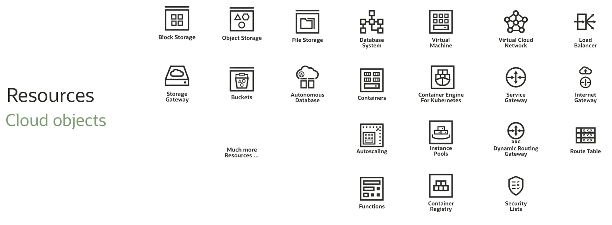
-
Federation
-
Resource
-
Network Sources
-
-
-
Networking
- VCN - Virtual Cloud Network
- Private Network
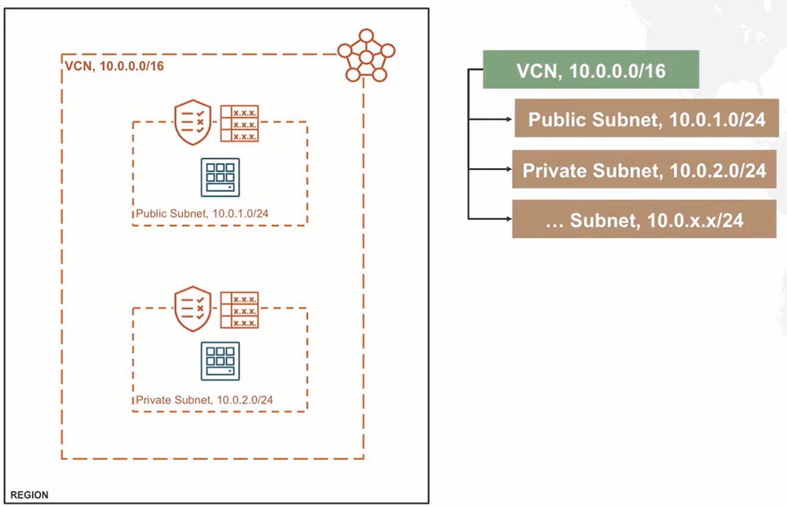
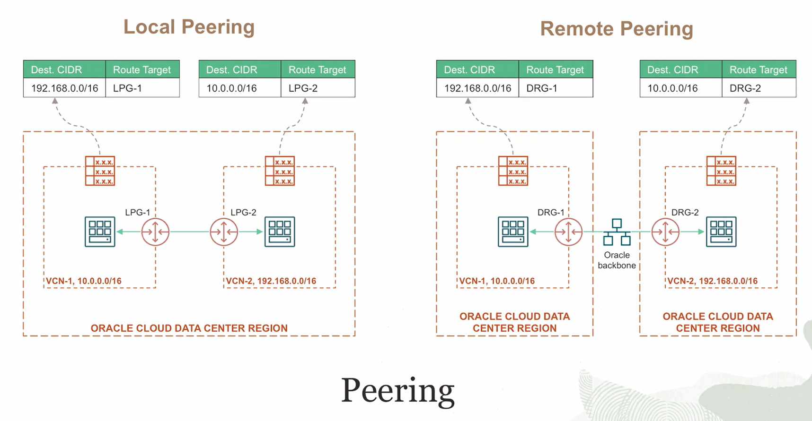
- Public Subnet (CIDR)
- Route Tables
- Privite Subnet (CIDR)
- Route Tables
- Public Subnet (CIDR)
- Secure Communication

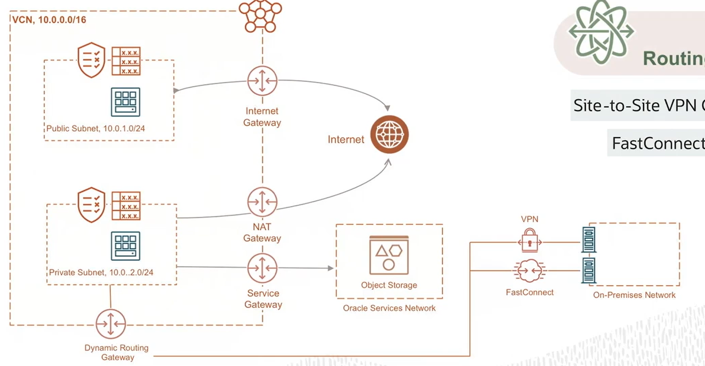
- Lives in Region
- Highly Available
- Scalable
- Secure
- Private Network
- Peerings
- LPG - Local Peering Gateway
- VCN A (Region X) - VCN B (Region X) [1-1]
- DRG - Dynamic Routing Gateway v1
- VCN A (Region X) - VCN B (Region Y) [1-1]
- DRG - Dynamic Routing Gateway v2
- VCN A - VCN B [3-300]
- LPG - Local Peering Gateway
- SL - Security Lists
- Firewall Rules
- Network Security Groups (NSG)
- Group of CIDR
- LB - Load Balancer Services
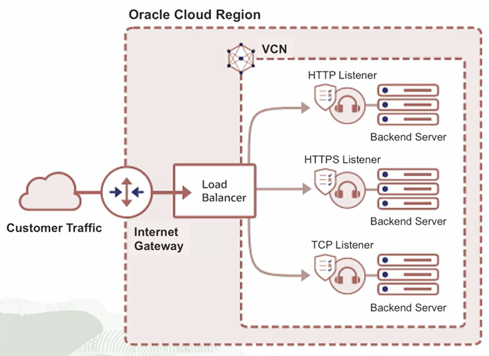
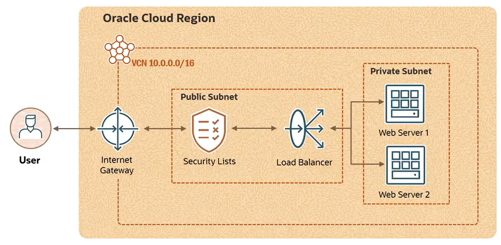
- Layer 7 HTTP, HTTPS, TCP socket
- coust
- Config
- Visibility: Public/Private
- Assign IP: Ephemeral/Reserved
- Shapes: bandwidth min/max
- IPv6?
- VCN, Subnet
- backends: weighted round robin, IP hash, Laest connections
- heath check: HTTP/80, HTTPS/443 + interval + timeout + retries + HTTP Status Code + URL [+ response regex]
- listener
- HTTPS|HTTP|HTTP/2|TCP
- Port
- SSL Certificate
- Network Load Balancer
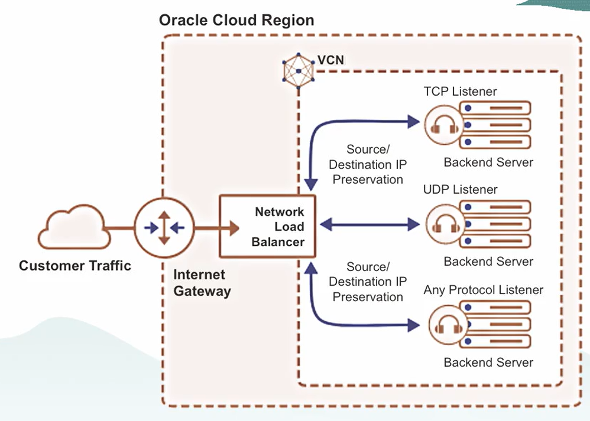
- Layer 3/4 TCP & UDP
- free
- mais rápido
- VCN - Virtual Cloud Network
-
Conputing
- Características
- Flexible Shapes
- CPUs
- Memory
- Sizing
- Small
- Medium
- Large
- Types
- VM - Virtual Machine
- Bare Metal
- Deticated Host
- Processores
(RPS/R$)- Ampere
(1116.644) - AMD
(843.535) - Intel
(659.041)
- Ampere
- Flexible Shapes
- Objects
- Instance
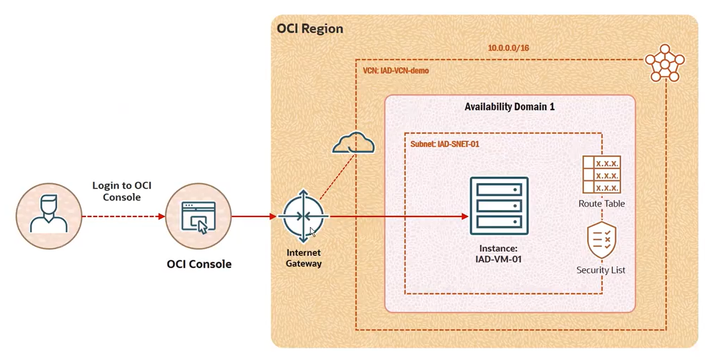
- Instance Basic VCN (network)/AD(Subnet)/VNIC+Private IP
- Remote Storage: boot + data
- OS
- Live Migrate between hosts
- Scaling
- Up/Down (+/-): Instance Shapes, stop before resizing
- Autoscaling (horizontal scaling) out/in (+/-): VMs
- Running Instance + Config (OS, metadata, shapes, vNICs, Storage, subnets)
- Instance pool (put in different availability domanis, manage all together, stop, start, terminate)
- Scaling Rules (before / after): init/min/max size
- Instance
- Kubernets - Container Engine for Kubernets (OKE)
- Container orchestration
- Deploy
- Manage
- Connect
- Scale up/down
- características
- FAst boot time
- Lightweight
- Portable
- any-scale without downtime
- auto-scale
- self-heal
- simplifies deployment
- Docker / CRI-O / OKE
- elements
- Containers
- Pods
- Nodes
- worker
- control plane
- kube-controler manager
- cloud-controler manager
- kube-APIsever
- kube-scheduler
- etcd (database key-value)
- NodePool
- Container orchestration
- Functions as-a-Service
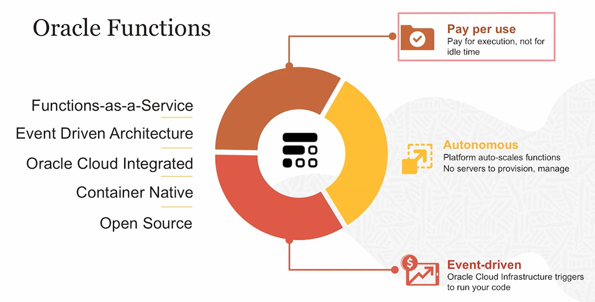
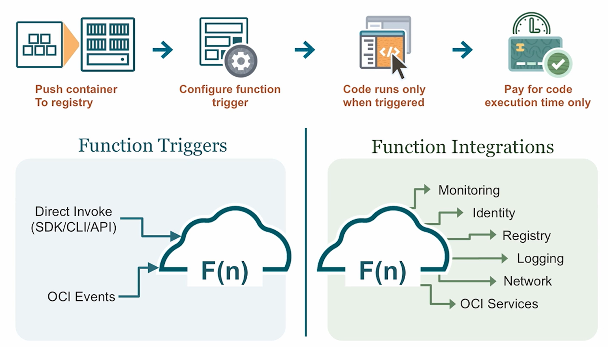
- Características
-
Storage
Característica Local NVMe SSDs Block Volume File Storage Object Storage Descrição Storage de Instância Armazenamento em Bloco Armazenamento de Arquivos Key-Value DB Persistência Não Persistente Persistente Persistente Super Persistente Vicnulados à instância Sim Não Não Não Tipo de Dados Recomendado FS, App, DB, Caches, OLTP, OLAP FS boot/data, App, DB shared, /home, repos, Lift-and-Shift Media, Big Data, Spark, Hadoop, Bin, archive/bkp, Logs, archives, Data Analitics Performance (IOPS) Extremamente Alto (Milhões) Lower Cost, Balanced, Higher, Ultra High (2,60,75,90-225/GB) Alto (escalável < Block) Variável/Alto Latência Extremamente Baixa Baixa Média Alta Capacidade Média (+-TBs) Alto (<=32 TB/volume) Alto (PBs) Ilimitada (petabytes++) Limitação HW da instância pode vários volumes/instância Escalável Não Durabilidade (Cópias) Baixa (só da instância) Média (3, 1 por FD) Média (3, 1 por FD) Alta (Múltiplas em 3 AD-Região) Conectividade Local Storage Network Storage Network Storage Network Storage Acesso Disco interno tradicional ex. /dev/sdbDisco via iSCSI ou Paravirtualized ex. /dev/sdbDiretório de rede ex. /mnt/fsAcessado por URL via SDKs ou APIs REST Protocolo Block (Acesso em nível de bloco pelo SO) Block (Conecta o volume como um disco em bloco) File (Protocolo NFS v3) HTTP/HTTPS (Baseado em objeto) - Local NVMe SSDs
- Block Volume
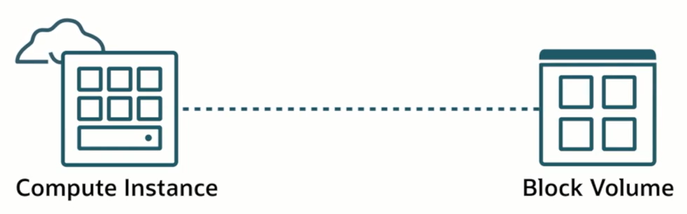
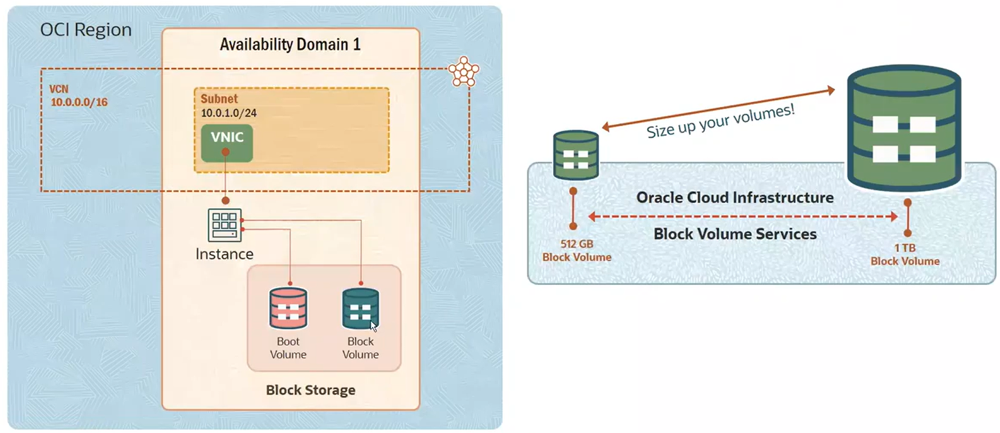
- Create and attach disks
- Detach and Delete Disks
- Keep Data even after you Delete the Instance
- Data Encryption
- by Default
- Storage and Transmition
- can use own key or oracle key
- Read/Write Shareable
- Online Resizing
- Replicate across regions
- Disater Recovery
- Migration
- Business Expansion
- Asynchronous
- Groups
- Easy management
- time consistent backups
- backup multiple volumes
- across multiple instances
- File Storage
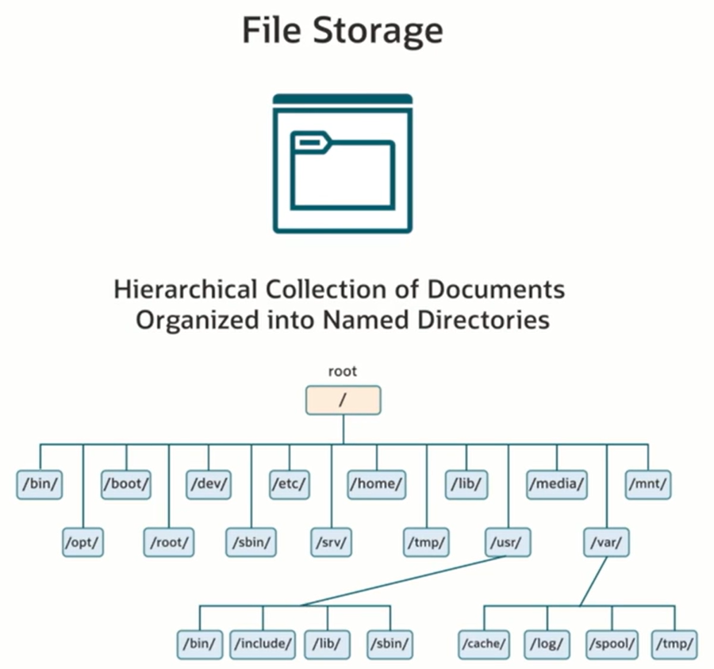
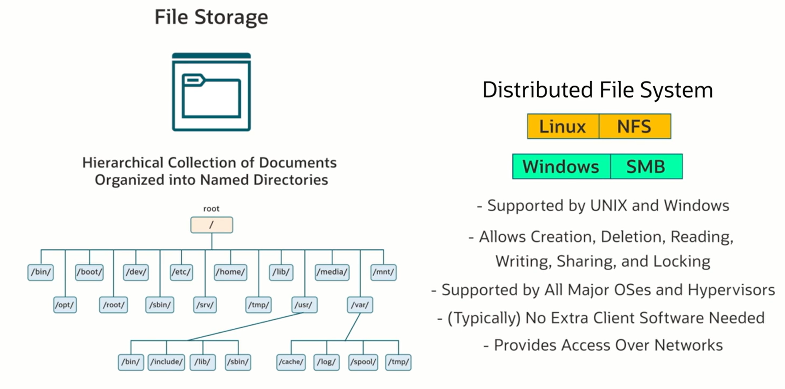
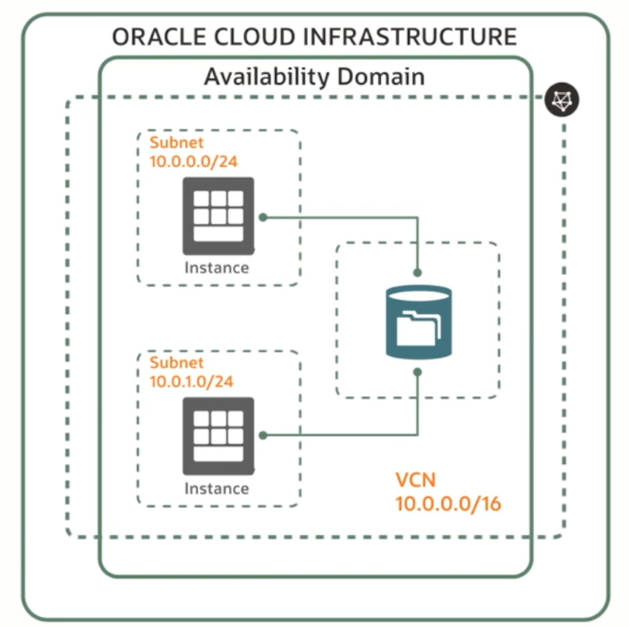
- Hierarchical Collection of Document Organized into Named Directories
- Use Cases
- EBS: Oracle Applications Lif and Shift
- General Purpose File Systems
- Micro Services and Containers
- Scale Out Apps
- Analitics
- Snapshots
- Data Encryption
- by Default
- Storage and Transmition
- can use own key or oracle key
- Object Storage
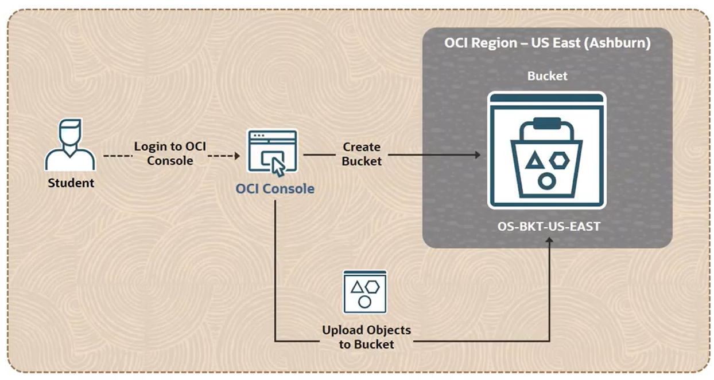
- URLs
https://<resource_type>.<region>.oraclecloud.com[/p/<pre_autenticated_key]/n/<namespace>/b/<bucket>/o/<object>https://objectstorage.us-sanjose-1.oraclecloud.com/n/xpto/b/development/o/log.ziphttps://objectstorage.us-sanjose-1.oraclecloud.com/p/alsef0_879yq34tal-Gsidufh/n/xpto/b/development/o/log.zip
- Object Storage Tiers (Nível de Armazenamento de Objetos)
- Esses níveis são criados para que você possa armazenar seus dados da maneira mais econômica possível, alinhando o custo ao padrão de acesso dos dados (com que frequência os dados são acessados).
- Níveis de Armazenamento de Objetos da OCI
- Standard Tier (Hot)
- Uso Ideal: Dados acessados ativamente e frequentemente (objetos "quentes").
- Melhor para: Conteúdo de sites, mídias frequentemente acessadas, dados de Big Data em tempo real e qualquer dado que exija desempenho e baixa latência constantes.
- Acesso: Acesso imediato (milissegundos).
- Custo: O mais alto. O custo por gigabyte (GB) é o mais alto dos três, mas não há taxas para acessar ou excluir os dados após serem armazenados.
- Custos de Recuperação (Egress/Retirada): Não há.
- IA-Infrequent Access (Cool)
- Uso Ideal: Dados que são acessados ocasionalmente, mas precisam de acesso imediato quando necessários (objetos "frios").
- Melhor para: Backups de curto prazo, dados de log que precisam ser retidos por meses, mas raramente são analisados.
- Acesso: Acesso imediato (milissegundos).
- Custo: Mais baixo que o Standard. O preço de armazenamento por GB é mais baixo que o Standard, mas você paga uma pequena taxa de retirada (recuperação) sempre que acessa os dados e deve manter os objetos armazenados por um mínimo de 31 dias.
- Custos de Recuperação (Egress/Retirada): Há taxas de retirada e um período de retenção mínima de 31 dias.
- Archive (Deep Cool)
- Uso Ideal: Dados de longo prazo que são raramente ou nunca acessados (arquivamento profundo).
- Melhor para: Conformidade regulatória de longo prazo, dados de arquivo históricos ou backups de desastres que são mantidos por anos e têm acesso mínimo ou zero.
- Acesso: Não é imediato.
- Objetos precisam de ser restaurados (restore) antes do download
- Tempo do processo de Restore: 1 hora
- Após restaurado temporariamente para o nível Standard tem 24 horas como padrão para consumir os dados
- Não atualizável
- Custo: O mais baixo. O custo de armazenamento por GB é o mais baixo de todos. No entanto, ele tem a maior taxa de retirada e um período de retenção mínima de 90 dias.
- Custos de Recuperação (Egress/Retirada): Há taxas de retirada e um período de retenção mínima de 90 dias.
- Standard Tier (Hot)
- Como a OCI Otimiza o Uso (Object Lifecycle Management)
- A OCI permite que você use o recurso Object Lifecycle Management (Gerenciamento do Ciclo de Vida de Objetos) para automatizar a transição entre esses níveis.
- Por exemplo, você pode configurar uma regra que diz: "Mover todos os objetos do nível Standard para o nível Infrequent Access 30 dias após sua criação, e depois movê-los para o Archive após 90 dias."
- Isso garante que seus dados sejam armazenados no nível mais econômico automaticamente à medida que envelhecem e se tornam menos acessados.
- Auto-Tiering
- Pode ser habilitado/desabilitado
- Simplifica o uso dos Níveis de Armazenamento de Objetos Standard/Infrequent Access.
- Em vez de você ter que configurar regras manuais, o Auto-Tiering faz a escolha por você, otimizando o custo automaticamente com base no padrão de acesso aos dados.
- O Auto-Tiering opera monitorando ativamente a frequência com que cada objeto é acessado e movendo-o para o nível mais apropriado.
- Ele se baseia em um princípio de movimento unidirecional em direção ao custo mais baixo.
- Fluxo de trabalho detalhado:
-
- Ingestão (Tudo Começa no Standard)
- Quando você faz o upload de um objeto para um bucket onde o Auto-Tiering está ativado, o objeto é inicialmente classificado no nível Standard.
-
- Monitoramento de Acesso
- A OCI monitora a atividade de acesso a cada objeto no bucket.
- Se um objeto for acessado (lido) frequentemente, ele permanece no nível Standard, que oferece o melhor desempenho.
-
- Transição Automática para IA (Scale Down de Custo)
- Se um objeto no nível Standard não for acessado por um período de tempo definido (geralmente alguns dias ou semanas), o sistema de Auto-Tiering o move automaticamente para o nível Infrequent Access (IA).
- Essa transição reduz o custo de armazenamento do objeto, pois o nível IA é mais barato por GB que o Standard.
-
- Reclassificação (Movimento de Volta)
- O ponto crucial do Auto-Tiering é que, se um objeto for acessado novamente (lido) enquanto estiver no nível IA, ele é movido de volta automaticamente para o nível Standard.
- Esse movimento garante que o objeto tenha o melhor desempenho e não incorra nas taxas de retirada do IA se for acessado frequentemente.
-
- Vantagens do Auto-Tiering
- Otimização de Custo: Garante que você pague o preço mais baixo possível para cada objeto, sem intervenção manual.
- Simplificação: Elimina a necessidade de criar e gerenciar políticas complexas de Ciclo de Vida do Objeto (Object Lifecycle Management) para migração entre Standard e IA.
- Desempenho: Sempre que um objeto "frio" se torna "quente" (é acessado), ele é promovido ao Standard para garantir que os próximos acessos tenham baixa latência.
- O que o Auto-Tiering Não Faz
- Não Inclui o Nível Archive: O Auto-Tiering só gerencia a transição entre Standard e Infrequent Access (IA). Ele nunca move um objeto para o nível Archive, pois o Archive requer o processo de "restauração" e tem uma latência de acesso muito alta. Se você quiser usar o nível Archive, deve configurá-lo manualmente usando as regras de Ciclo de Vida do Objeto.
- Não Há Período de Retenção Mínima: Ao usar o Auto-Tiering, as taxas de retenção mínima do nível IA (31 dias) não se aplicam. Você paga apenas pelo tempo real que o objeto fica no nível IA.
- Transmition Data
- Hot Tier
- Cool Tier 60% cheaper
- Data Encryption
- by Default
- Storage and Transmition
- can use own key or oracle key
- Versionamento
- Pode ser habilitado/desabilitado
- Visibilidade
- Privada/Pública (create a pre-autenticated request)
- URLs
-
Security
Manages On-premises OCI Data You You Devices You You Accounts & Identities You You Applications You You Network Controls You You Operating System You You Virtualization You Oracle Physical Hosts You Oracle Physical Network You Oracle Physical Datacenter You Oracle -
Security Services Layers
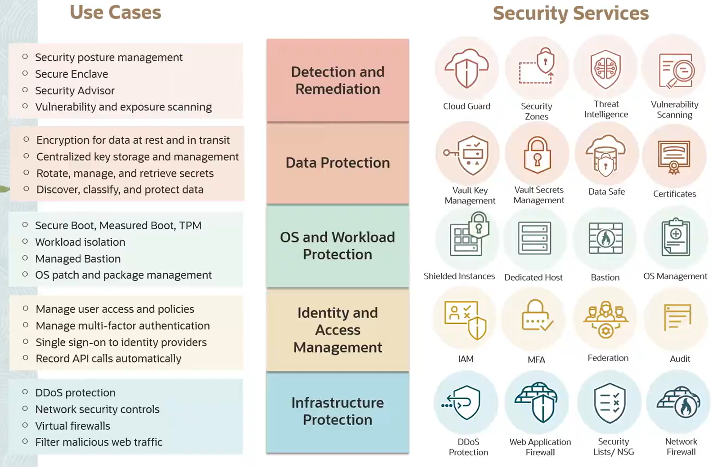
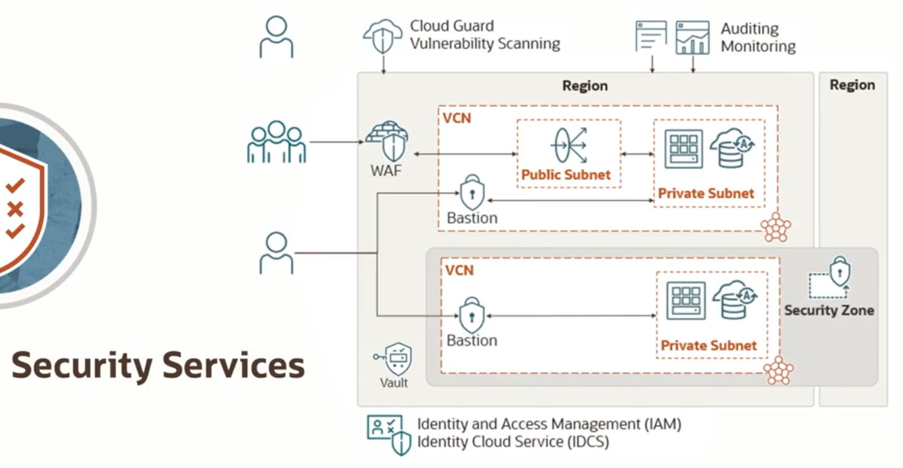
- Detection and Remediation
- Use Cases
- Security posture management
- Secure Enclave
- Security Advisor
- Vulnerability and exposure scanning
- Security Services
- Cloud Guard
- Security Zones
- Threat Intelligence
- Vulnerability Scanning
- Use Cases
- Data Protection
- Use Cases
- Encryption for data at rest and in transit
- Centralized key storage and management
- Rotate, manage, and retrieve secrets
- Discover, classify, and protect data
- Security Services
- Vault Key Management
- Vault Secrets Management
- Data Safe
- Certificates
- Use Cases
- OS and Workload Protection
- Use Cases
- Secure Boot, Measured Boot, TPM
- Workload isolation
- Managed Bastion
- OS patch and package management
- Security Services
- Shielded Instances
- Dedicated Host
- Bastion
- OS Management
- Use Cases
- Identity and Access Management
- Use Cases
- Manage user access and policies
- Manage multi-factor authentication
- Single sign-on to identity providers
- Record API calls automatically
- Security Services
- IAM
- MFA
- Federation
- Audit
- Use Cases
- Infrastructure Protection
- Use Cases
- DDoS protection
- Network security controls
- Virtual firewalls
- Filter malicious web traffic
- Security Services
- DDoS Protection
- Web Application Firewall
- Security Lists/NSG
- Network Firewall
- Use Cases
- Detection and Remediation
-
Cloud Guard
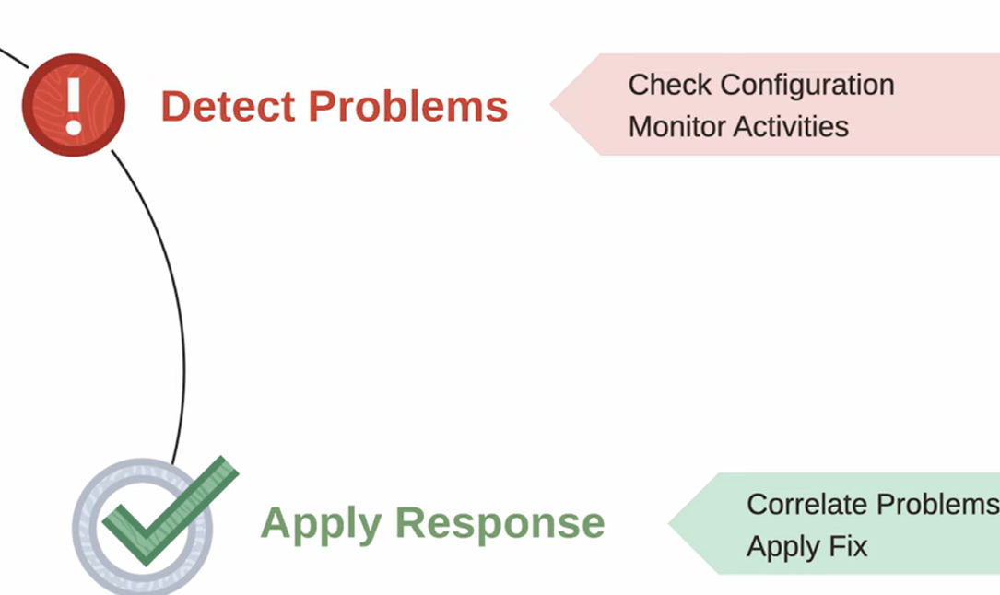
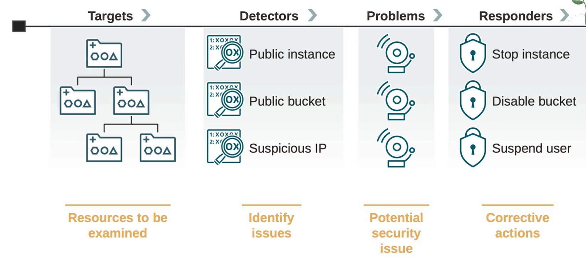
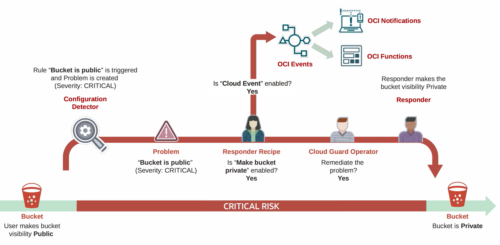
- O que faz: Monitora continuamente sua tenancy (locação) da OCI e todos os seus Compartimentos em busca de atividades de risco e falhas de configuração.
- Como funciona: Ele usa "Detectores" para identificar problemas (ex: um bucket de Object Storage tornado público) e "Respondedores" para tomar ações automáticas (ex: alertar um administrador ou até mesmo tornar o bucket privado novamente).
- Propósito: Fornece visibilidade em tempo real do seu nível de risco de segurança.
- Steps:
- Monitor and Identify
- Potential Security Issues
- Remediate Them
-
Security Zone
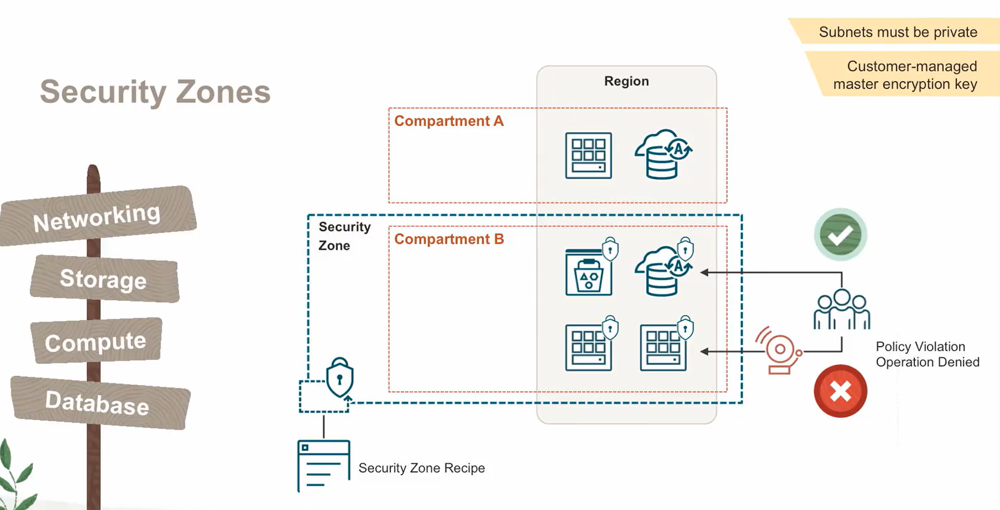
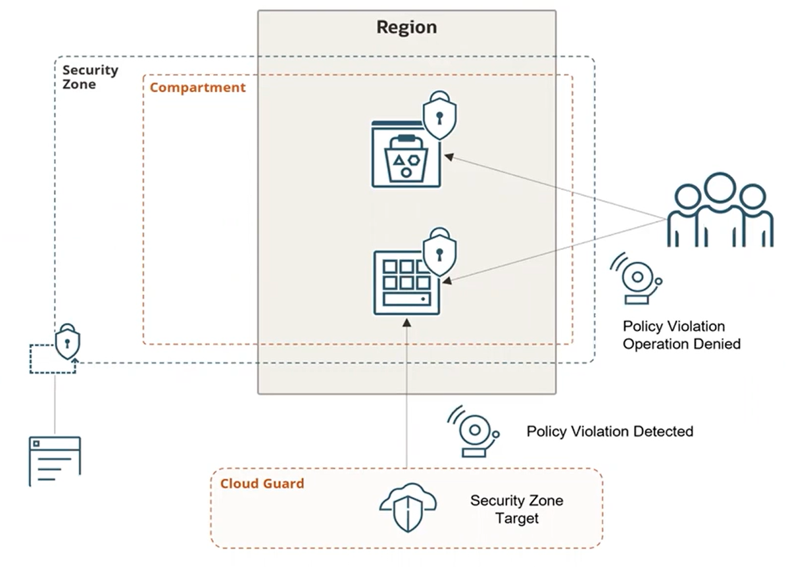
- can not disable security
- O que faz: Impõe políticas de segurança pré-configuradas e baseadas nas melhores práticas da Oracle (Cloud Guard).
- Como funciona: Você designa um Compartimento para ser uma Security Zone. Qualquer recurso que você tente criar nesse Compartimento deve cumprir rigorosamente as políticas da Security Zone. Se um recurso violar uma política (ex: tentar criar um Block Volume sem criptografia), a OCI bloqueia a criação do recurso.
- Propósito: Previne proativamente falhas de segurança antes que os recursos sejam implantados.
-
Security Advisor
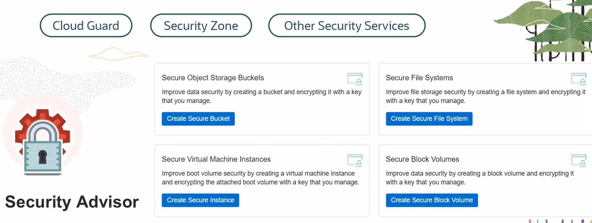
- O que faz: Ajuda a analisar e lidar com as descobertas de segurança feitas pelo Cloud Guard.
- Como funciona: Ele fornece uma visão unificada e acionável dos problemas detectados (ex: quais falhas de configuração persistem, quais violações de políticas foram resolvidas).
- Propósito: Oferece um guia prático para corrigir problemas de segurança identificados e manter a conformidade.
- Gerencia/Corrige:
- Security Zone
- Cloud Guard
- Other security services
-
Encryption Basics
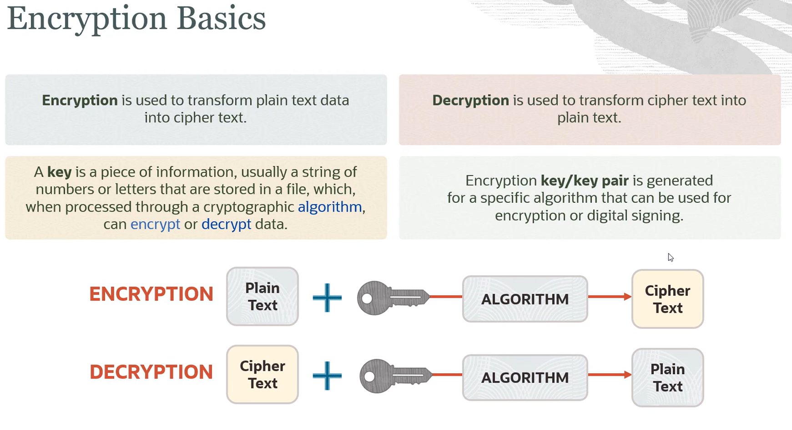
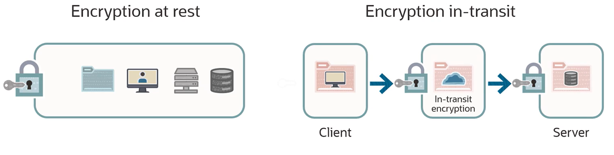
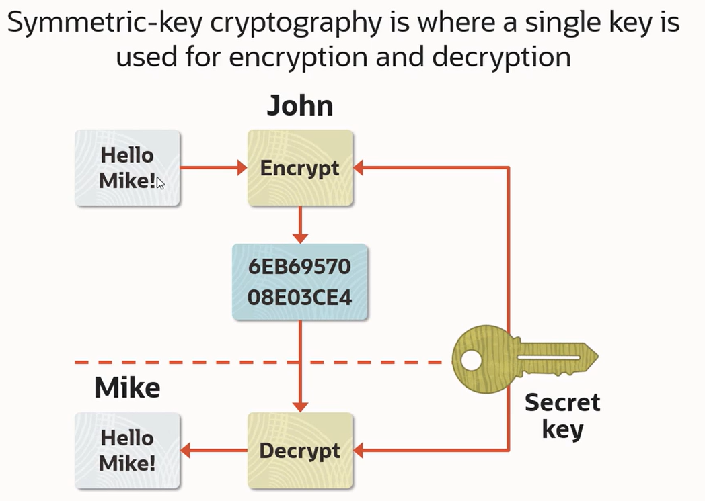
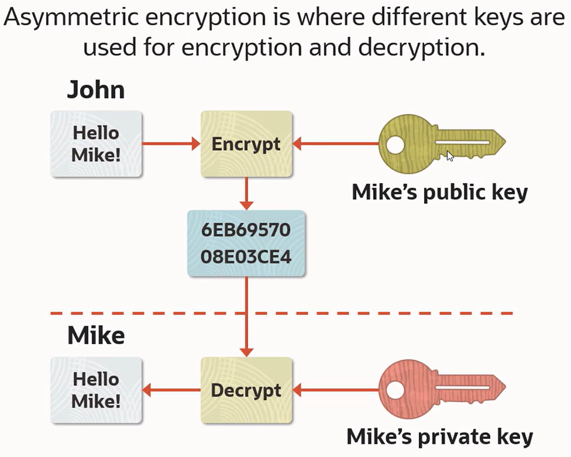
-
AES (Advanced Encryption Standard) symetric keys
- Descrição: O AES é o algoritmo de criptografia simétrica mais amplamente utilizado no mundo, sendo o padrão adotado pelo governo dos EUA.
- O que faz: Garante a confidencialidade (privacidade) dos dados.
- Como funciona: É um algoritmo simétrico, o que significa que ele usa uma única chave secreta tanto para criptografar (embaralhar) quanto para descriptografar (desembaralhar) os dados.
- Uso Ideal: Criptografia de grandes volumes de dados (dados em repouso, como Block Volumes, Object Storage, ou dados em trânsito, como o tráfego HTTPS), onde a velocidade é crucial.
Característica Detalhe Tipo Criptografia Simétrica (Chave Única). Função Confidencialidade e Privacidade. Vantagem Extremamente rápido e eficiente. - The same key encrypts and decrypts data
- It cannot be used for digital signing
-
RSA (Rivest–Shamir–Adleman) (asymetric keys)
- Descrição: O RSA é o algoritmo de criptografia assimétrica mais tradicional e popular.
- O que faz: Garante a troca segura de chaves e a assinatura digital.
- Como funciona: É um algoritmo assimétrico (ou de chave pública), utilizando um par de chaves:
- Chave Pública: Compartilhada abertamente e usada para criptografar dados ou verificar assinaturas.
- Chave Privada: Mantida em segredo pelo proprietário e usada para descriptografar dados ou criar assinaturas.
- Uso Típico: No HTTPS, o RSA é usado para criptografar o AES Key (a chave simétrica) antes de enviá-la ao cliente, estabelecendo o canal seguro. Também é amplamente usado para assinaturas digitais e chaves SSH.
Característica Detalhe Tipo Criptografia Assimétrica (Chave Pública/Privada). Função Troca de Chaves e Assinatura Digital. Desvantagem Lento para grandes volumes de dados. - A public key encrypts and private key decrypts data
- It can be used for digital signing
-
ECDSA (Elliptic Curve Digital Signature Algorithm) (digital signing keys)
- Descrição: O ECDSA é o algoritmo de assinatura digital baseado em Criptografia de Curva Elíptica (ECC).
- O que faz: Garante autenticidade (prova de origem) e integridade (prova de que não foi alterado).
- Como funciona: Usa a matemática das curvas elípticas. Assim como o RSA, ele usa pares de chaves pública/privada, mas gera uma assinatura digital muito mais curta e eficiente para o mesmo nível de segurança.
- Uso Ideal: É o substituto moderno do RSA em muitos casos, especialmente em certificados digitais (HTTPS/TLS) e criptomoedas, pois oferece segurança comparável com tamanhos de chave muito menores (e, portanto, é mais rápido e exige menos poder computacional).
Característica Detalhe Tipo Assinatura Digital Assimétrica (baseado em ECC). Função Autenticidade e Integridade. Vantagem Alta segurança com chaves menores e processamento mais rápido que o RSA. - Can be used only for digital signing, not encryption and decryption of data
-
-
Hardware Security Module (HSM)
-
É um dispositivo de hardware físico projetado especificamente para proteger e gerenciar chaves criptográficas digitais.
-
Pense nele como um "cofre digital" à prova de adulteração (tamper-proof) e altamente seguro para os seus segredos mais importantes, especialmente as chaves de criptografia.
-
O Que é e Como Funciona
- Propósito Principal: Proteção de Chaves: O HSM não é apenas um dispositivo de armazenamento; ele é projetado para:
- Geração Segura de Chaves: Criar chaves aleatórias e de alta qualidade dentro do hardware seguro.
- Proteção de Chaves: Armazenar chaves privadas e mestras em um ambiente isolado e à prova de adulteração.
- Execução Criptográfica: Executar operações criptográficas (como criptografar, descriptografar ou assinar) dentro do próprio dispositivo, de modo que a chave privada nunca precise deixar o ambiente seguro do HSM.
- Segurança Física e Lógica: Os HSMs são construídos com recursos avançados de segurança:
- Anti-Tampering: Eles são projetados para serem resistentes a ataques físicos. Se for detectada qualquer tentativa de violação (como perfuração ou alteração de temperatura), o HSM pode imediatamente apagar todas as chaves que armazena (mecanismo de zeroization).
- Isolamento: Ele isola as chaves do sistema operacional do host e de vulnerabilidades de software.
- Propósito Principal: Proteção de Chaves: O HSM não é apenas um dispositivo de armazenamento; ele é projetado para:
-
Casos de Uso Comuns do HSM: Os HSMs são essenciais para qualquer cenário que exija o mais alto nível de confiança e conformidade regulatória:
- Serviços de Certificados Digitais (PKI): Proteção da chave privada da Autoridade de Certificação (CA), que é usada para assinar todos os certificados digitais (incluindo certificados SSL/TLS para HTTPS).
- Serviços de Criptografia em Nuvem (OCI Vault): Provedores de nuvem como a OCI usam HSMs para proteger as chaves mestras que, por sua vez, criptografam todas as outras chaves e dados dos clientes.
- Serviços de Pagamento (Financeiro): Usado para proteger as chaves usadas para processar transações com cartão de crédito e débito (PCI-DSS).
- Assinatura de Código: Usado para assinar software e garantir que o código não foi adulterado após a compilação.
-
HSM vs. Software Key Storage: A principal vantagem de um HSM é a garantia de que a chave privada de alto valor nunca é exposta ao ambiente de software.
Característica Hardware Security Module (HSM) Armazenamento de Chave em Software Proteção da Chave Protegida por hardware físico, com zeroization em caso de violação. Protegida por criptografia, mas reside no disco ou memória do servidor. Ambiente de Operação Operações criptográficas ocorrem dentro do módulo seguro. Operações criptográficas ocorrem no CPU do host (exposto ao SO). Custo e Complexidade Alto custo e alta complexidade (alto nível de segurança). Baixo custo e menor complexidade.
-
-
Vault
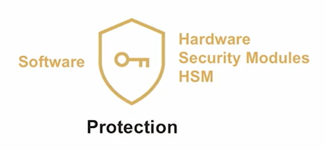
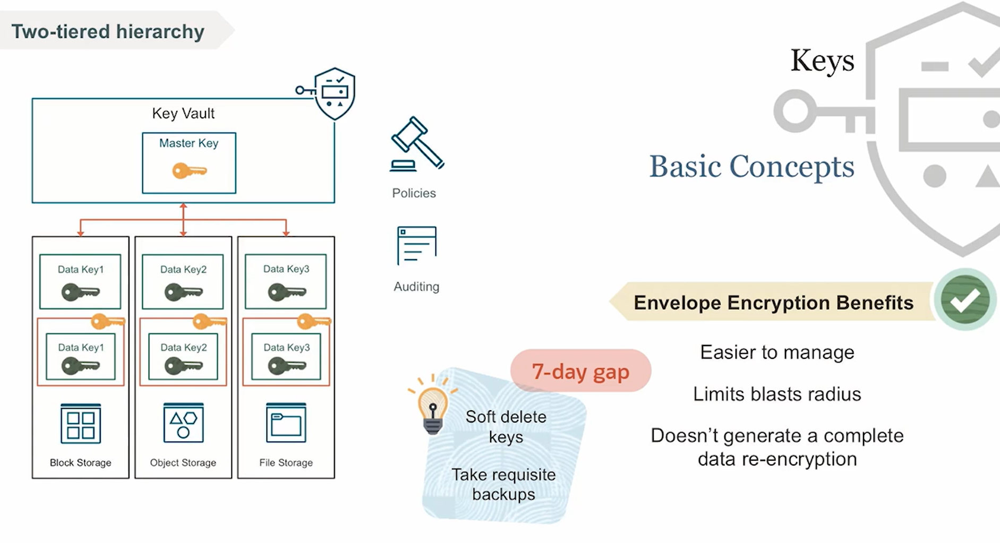
- Secrets
- Passwords
- Certificates
- SSH-keys
- Auth Tokens
- Master Security key protected by
- HSM
- Stored in HSM Device
- Can not be exported from HSM
- Software
- Stored in Server
- Can be exported from Server
- Operations allowed on Clients
- HSM
- Algorithms
- AES, RSA, ECDSA
- Key integrated in OCI
- Rotare your master keys
- Secrets
-
-
Governance and Administration
- Pricing
- Modules
- Pay as you go (PAYG)
- Charged only for the resource consumed
- No upfront commitement
- No minumum service period
- Usage metered
- Annual Uiversal Credits
- Commit to an annual pool of funds
- Significant savings
- Must use credits with in 12 months
- Discounts based on size of deal and term of deal
- Bring Your Own Licence (BYOL)
- Apply your current on-premises Oracle licences to equivalent, highly automated Oracle IaaS & PaaS services in the cloud
- Complete licence mobility with on-premises
- Pay as you go (PAYG)
- Impact
- Resource Size: Bigger cost more
- Resource Type: VMs vs BMs, VMs vs Functions, BYOL vs managed DBs
- Data Transfer: No ingress cost, careful with egress cost
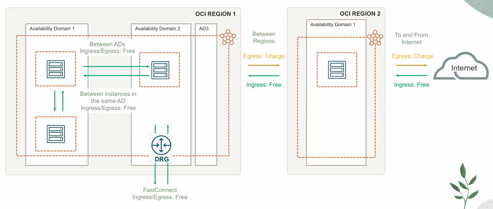
- All OCI regions have the same pricing
- Modules
- Cost Management
- Create budget and alerts
- Analysis
- Usage Reports
- Limits, Quotas and Usage
- Tagging
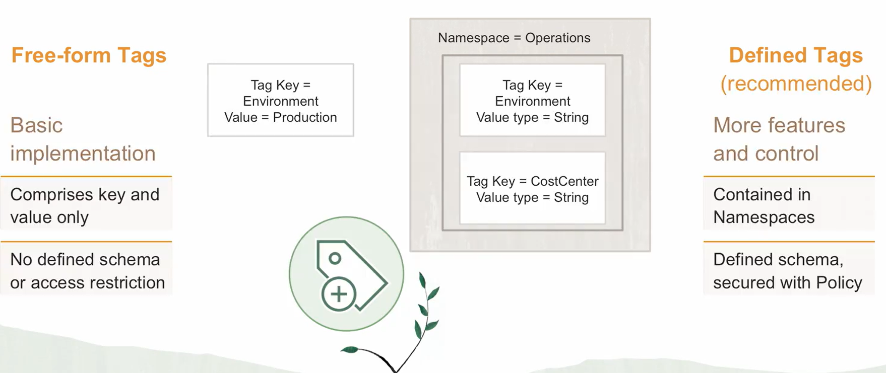
- key-value pair to
- resource organization
- cost management
- access control
- Name convention
<namespace>.<key>=<value>Opertions.Enviroment="Prodution"- Tag Namespace: is a container for a set of tag keys with tag key definitions
- Tag Key definition specifies its key and what types of values are allowed
- key-value pair to
- Cloud Advisor
- Overview
- Recomendations
- Pricing
-
Obs
- Redundância Local = Região / Availability Domain (>=1<=3) / Fault Domain (3)
- Redundância Geográfica ???
- Desaster Recovery precisa de 2 Regiões
- Data guard replica DB entre AD entre FD é nativo
- Polices são sempre dadas a grupos de users para compartments de resources
- Polices são apenas de permissão pois tudo já está negado
- Um recurso só pode estar em um compartment
- Tenancy e Compartments são construções globais (multi regiões)
- Tenancy pode estar associado a uma região mas opera em todas
- Tenancy é seu Id na cloud
- compartments permite <=6 nívels de hierarquias
- quotas
- orçamentos
IA
https://mylearn.oracle.com/ou/learning-path/become-a-oci-ai-foundations-associate-2025/147781
faça esses 2 cursos com certificação gratuíta
https://mylearn.oracle.com/ou/learning-path/become-an-oci-foundations-associate-2025/148056/?source=:pm:qr:::::RC_CORP250813P00041:OracleCertificationsWorkshopTIM_QRCodeOCIFoundations
https://mylearn.oracle.com/ou/learning-path/become-a-oci-ai-foundations-associate-2025/147781
e aproveite para estudar muiiiito que, até dia 30/10, poderá tirar certificação Oracle Professional Gratuíta
Dicas
- Dados bons são dados limpos e organizados.
- Algoritmo é uma sequência de passos que transforma dados (ingredientes) em um resultado útil (café pronto).
- Modelo de classificação atribui categorias a novos dados com base em padrões previamente aprendidos.
- Modelo de regressão estima valores contínuos com base em dados históricos.
- Modelo de clusterização agrupa dados semelhantes com base em suas características, sem a necessidade de rótulos pré-definidos.
- Modelo de Aprendizado por Reforço aprende a tomar decisões interagindo com o ambiente.
- Deep learning utiliza camadas de redes neurais profundas para aprender automaticamente padrões complexos dos dados.
- CNN é uma rede neural que identifica padrões em imagens.
- RNN processa dados sequencialmente, mas possui memória fraca, retendo informações apenas por curtos períodos.
- Transformers possuem mecanismos de atenção, identificando rapidamente quais partes da frase são mais importantes para entender o contexto.
- IA responsável envolve o desenvolvimento de sistemas de inteligência artificial éticos, justos, transparentes e seguros.
- RAG combina a busca por informações externas com a geração de texto.